Held sentry control: native renderer review
Local runtime slice. These are actual engine screenshots at game scale, not human-playtest or final badge/art acceptance. Render schedule: 5 Hz plus forced two-buffer readbacks. Simulation: configured 60 Hz.
Canonical fixture uses 100 HP, 45 protection ticks and three grenades. Protection is a QA override (shipped profile: 30 ticks). Empty-only QA additionally changes sentry ammunition to zero outside the playable bundle. Source gameplay, wave pacing, assets and duration tuning are otherwise retained.
Operation and cancellation
5_ready.png | tick 1 | Auto | ammo 80 | progress 0/0
5_disable_begin.png | tick 3 | Auto, Auto | ammo 80, 80 | progress 1/60
5_disable_quarter.png | tick 17 | Auto, Auto | ammo 80, 80 | progress 15/60
5_disable_half.png | tick 32 | Auto, Auto | ammo 80, 80 | progress 30/60
5_disable_three_quarters.png | tick 47 | Auto, Auto | ammo 80, 80 | progress 45/60
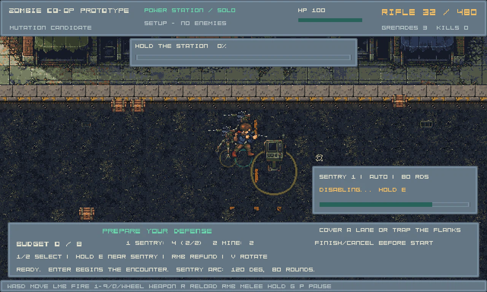
5_disable_complete.png | tick 62 | HoldFire, Auto | ammo 80, 80 | progress 0/0
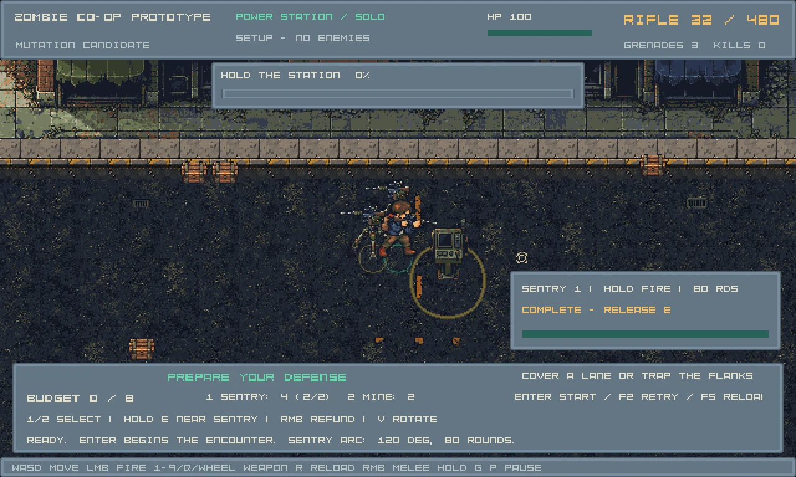
5_held_no_repeat.png | tick 76 | HoldFire, Auto | ammo 80, 80 | progress 0/0
5_enable_begin.png | tick 79 | HoldFire, Auto | ammo 80, 80 | progress 1/90
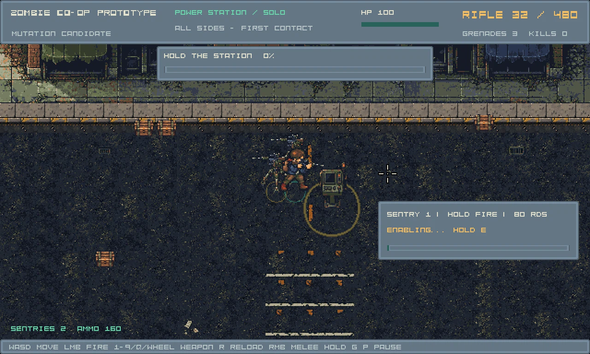
5_enable_half.png | tick 123 | HoldFire, Auto | ammo 80, 80 | progress 45/90
5_movement_cancel.png | tick 124 | HoldFire, Auto | ammo 80, 80 | progress 0/0
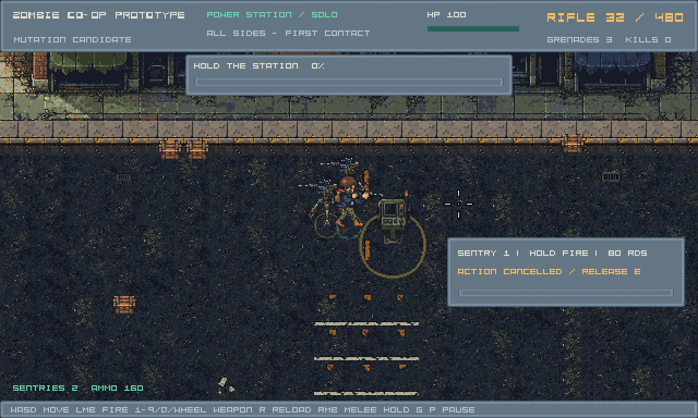
5_held_after_cancel.png | tick 126 | HoldFire, Auto | ammo 80, 80 | progress 0/0
5_retry_begin_zero.png | tick 128 | HoldFire, Auto | ammo 80, 80 | progress 1/90
5_retry_half.png | tick 172 | HoldFire, Auto | ammo 80, 80 | progress 45/90
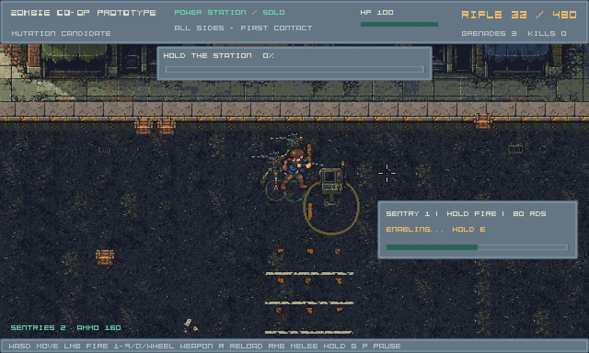
5_enable_complete.png | tick 217 | Auto, Auto | ammo 80, 80 | progress 0/0
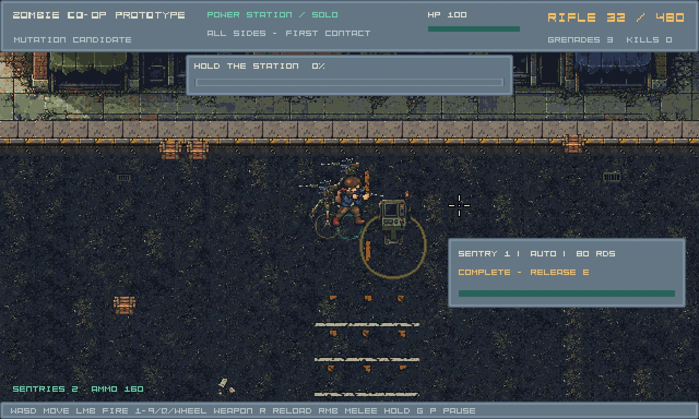
5_battle_auto.png | tick 241 | Auto, Auto | ammo 80, 80 | progress 0/0
5_battle_disable_half.png | tick 272 | Auto, Auto | ammo 80, 80 | progress 30/60
5_fire_cancel.png | tick 273 | Auto, Auto | ammo 80, 80 | progress 0/0
5_final.png | tick 286 | Auto, Auto | ammo 80, 80 | progress 0/0
Empty ammunition with independent mode
5_ready.png | tick 1 | Auto | ammo 0 | progress 0/0
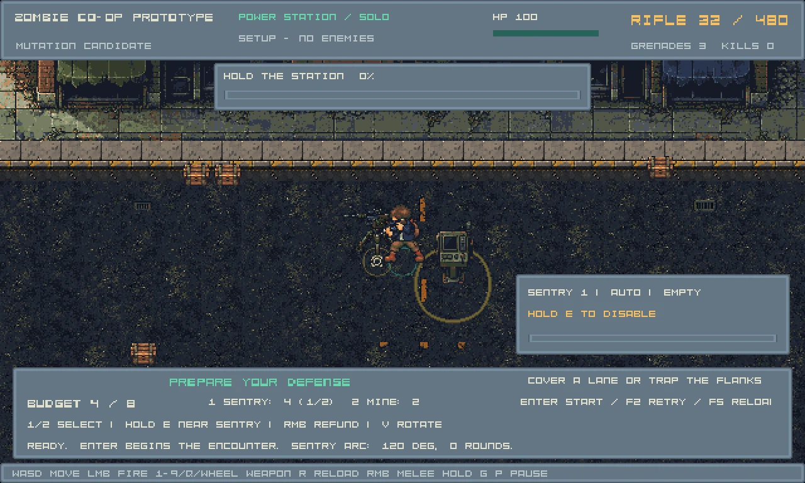
5_disable_begin.png | tick 3 | Auto, Auto | ammo 0, 0 | progress 1/60
5_disable_quarter.png | tick 17 | Auto, Auto | ammo 0, 0 | progress 15/60
5_disable_half.png | tick 32 | Auto, Auto | ammo 0, 0 | progress 30/60
5_disable_three_quarters.png | tick 47 | Auto, Auto | ammo 0, 0 | progress 45/60
5_disable_complete.png | tick 62 | HoldFire, Auto | ammo 0, 0 | progress 0/0
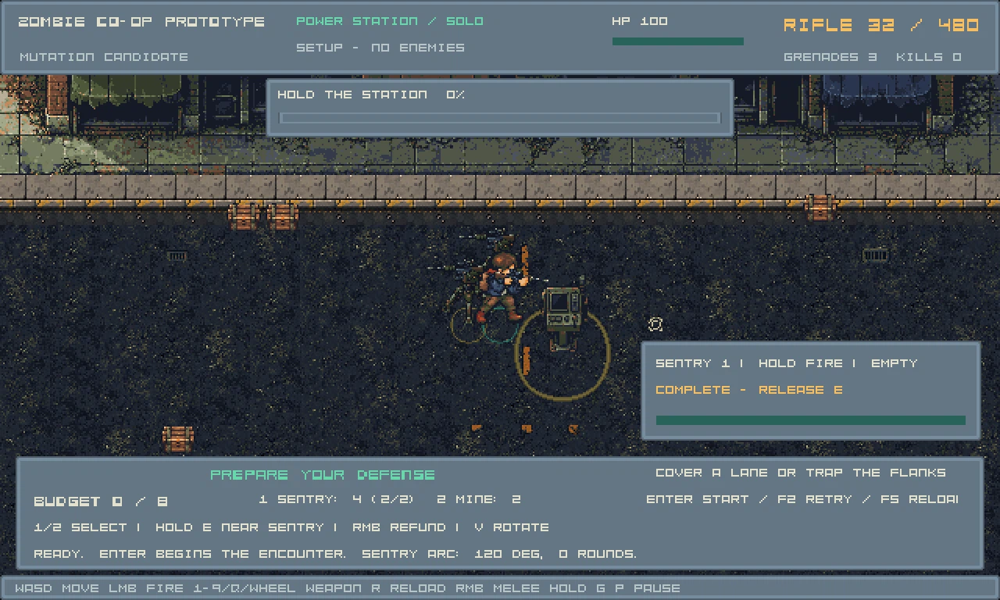
5_held_no_repeat.png | tick 76 | HoldFire, Auto | ammo 0, 0 | progress 0/0
5_enable_begin.png | tick 79 | HoldFire, Auto | ammo 0, 0 | progress 1/90
5_enable_half.png | tick 123 | HoldFire, Auto | ammo 0, 0 | progress 45/90
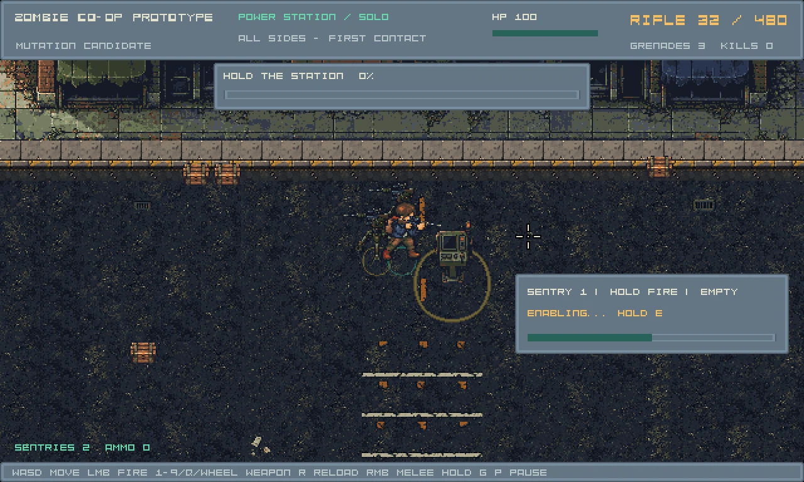
5_movement_cancel.png | tick 124 | HoldFire, Auto | ammo 0, 0 | progress 0/0
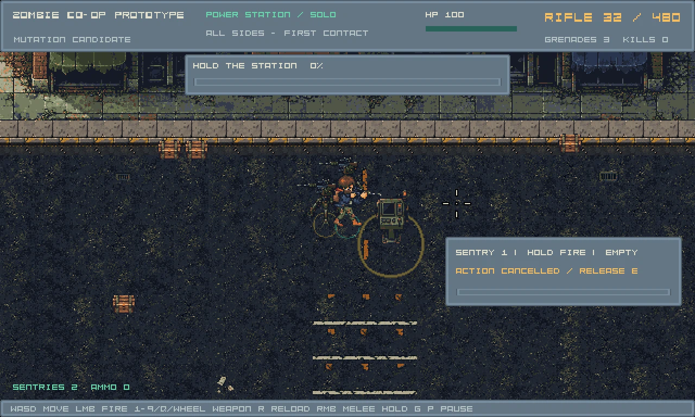
5_held_after_cancel.png | tick 126 | HoldFire, Auto | ammo 0, 0 | progress 0/0
5_retry_begin_zero.png | tick 128 | HoldFire, Auto | ammo 0, 0 | progress 1/90
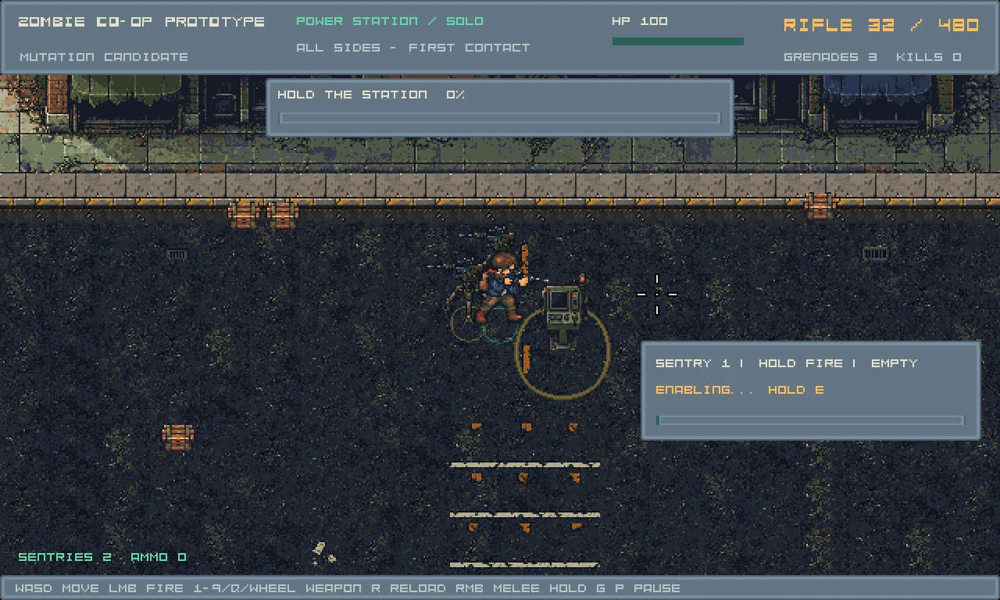
5_retry_half.png | tick 172 | HoldFire, Auto | ammo 0, 0 | progress 45/90
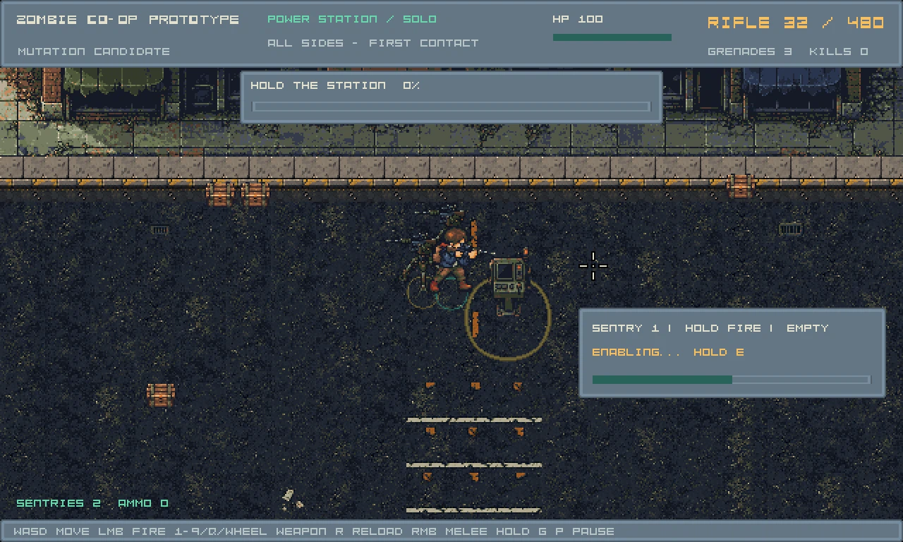
5_enable_complete.png | tick 217 | Auto, Auto | ammo 0, 0 | progress 0/0
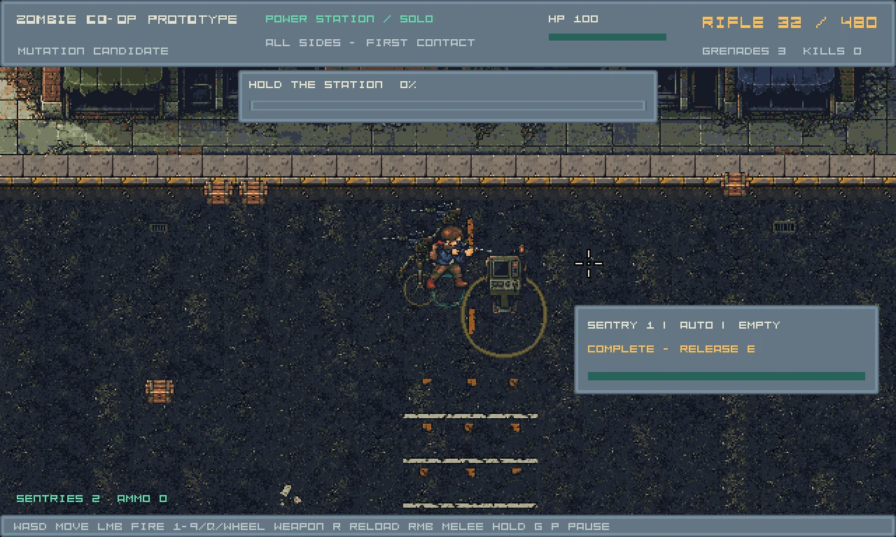
5_battle_auto.png | tick 241 | Auto, Auto | ammo 0, 0 | progress 0/0
5_battle_disable_half.png | tick 272 | Auto, Auto | ammo 0, 0 | progress 30/60
5_fire_cancel.png | tick 273 | Auto, Auto | ammo 0, 0 | progress 0/0
5_final.png | tick 286 | Auto, Auto | ammo 0, 0 | progress 0/0
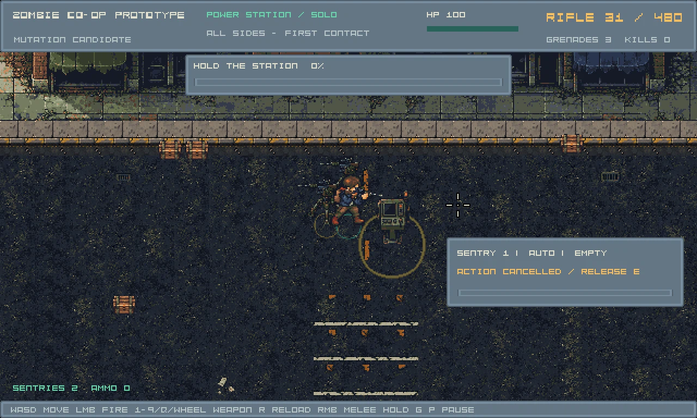
Mixed Walker Runner Sprinter encounter
5_ready.png | tick 1 | Auto | ammo 80 | progress 0/0
5_disable_begin.png | tick 3 | Auto, Auto | ammo 80, 80 | progress 1/60
5_disable_quarter.png | tick 17 | Auto, Auto | ammo 80, 80 | progress 15/60
5_disable_half.png | tick 32 | Auto, Auto | ammo 80, 80 | progress 30/60
5_disable_three_quarters.png | tick 47 | Auto, Auto | ammo 80, 80 | progress 45/60
5_disable_complete.png | tick 62 | HoldFire, Auto | ammo 80, 80 | progress 0/0
5_held_no_repeat.png | tick 76 | HoldFire, Auto | ammo 80, 80 | progress 0/0
5_enable_begin.png | tick 79 | HoldFire, Auto | ammo 80, 80 | progress 1/90
5_enable_half.png | tick 123 | HoldFire, Auto | ammo 80, 80 | progress 45/90
5_movement_cancel.png | tick 124 | HoldFire, Auto | ammo 80, 80 | progress 0/0
5_held_after_cancel.png | tick 126 | HoldFire, Auto | ammo 80, 80 | progress 0/0
5_retry_begin_zero.png | tick 128 | HoldFire, Auto | ammo 80, 80 | progress 1/90
5_retry_half.png | tick 172 | HoldFire, Auto | ammo 80, 80 | progress 45/90
5_enable_complete.png | tick 217 | Auto, Auto | ammo 80, 80 | progress 0/0
5_battle_auto.png | tick 241 | Auto, Auto | ammo 80, 80 | progress 0/0
5_battle_disable_half.png | tick 272 | Auto, Auto | ammo 80, 80 | progress 30/60
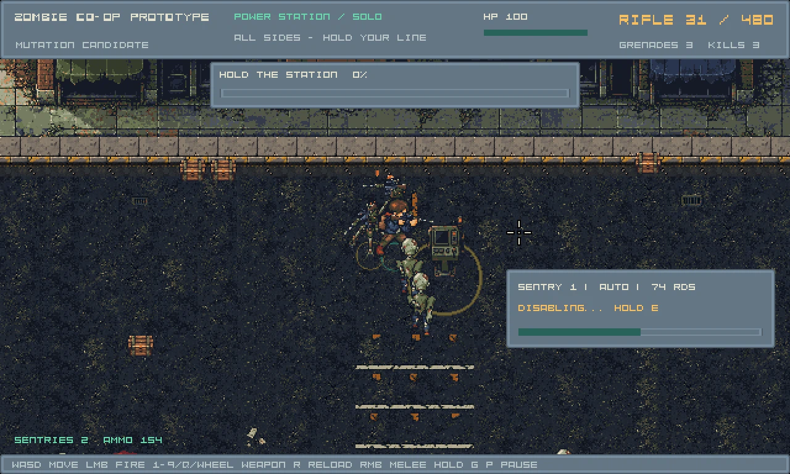
5_fire_cancel.png | tick 273 | Auto, Auto | ammo 80, 80 | progress 0/0
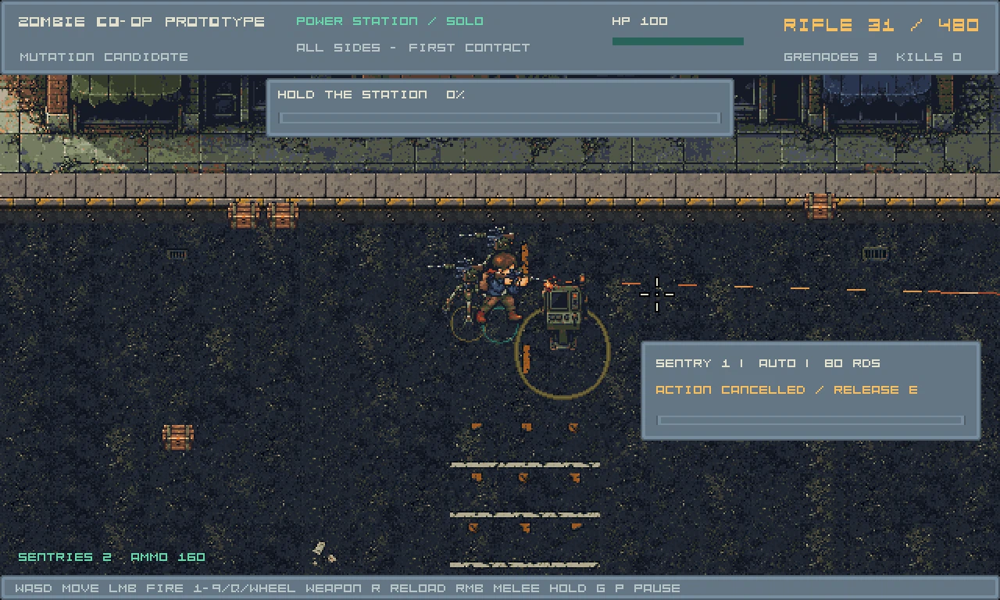
5_final.png | tick 286 | Auto, Auto | ammo 80, 80 | progress 0/0
5_approach.png | tick 701 | Auto, Auto | ammo 76, 80 | progress 0/0
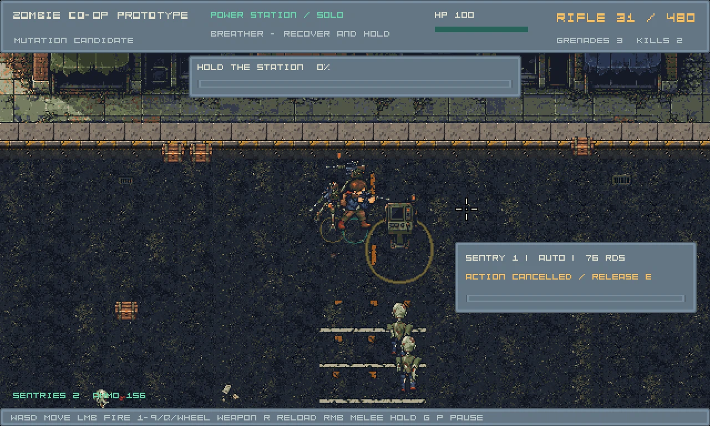
5_release_under_pressure.png | tick 901 | Auto, Auto | ammo 74, 80 | progress 0/0
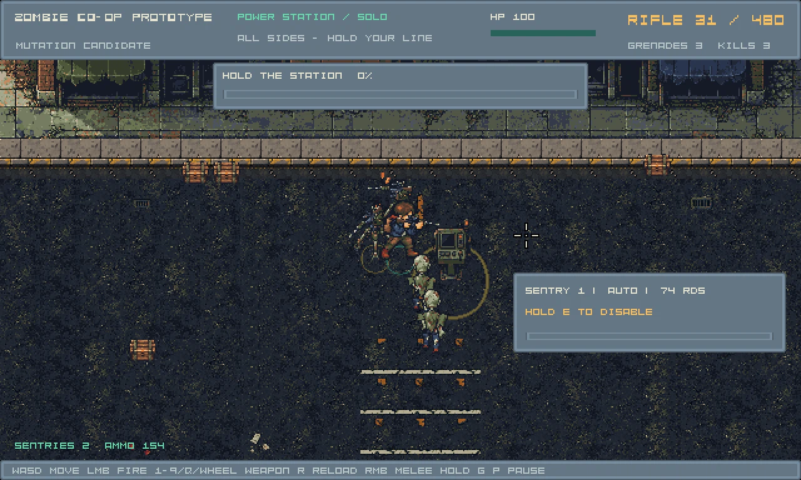
5_battle_disable_begin.png | tick 902 | Auto, Auto | ammo 74, 80 | progress 1/60
5_battle_disable_half.png | tick 931 | Auto, Auto | ammo 74, 80 | progress 30/60
5_battle_disable_deadline.png | tick 961 | HoldFire, Auto | ammo 74, 80 | progress 0/0
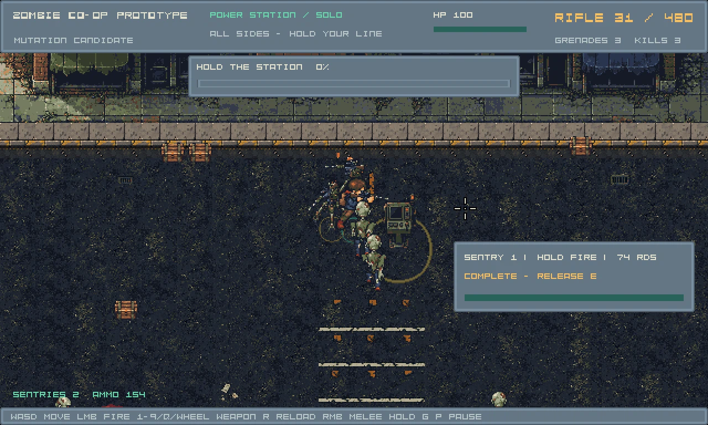
5_battle_held.png | tick 1101 | HoldFire, Auto | ammo 74, 80 | progress 0/0
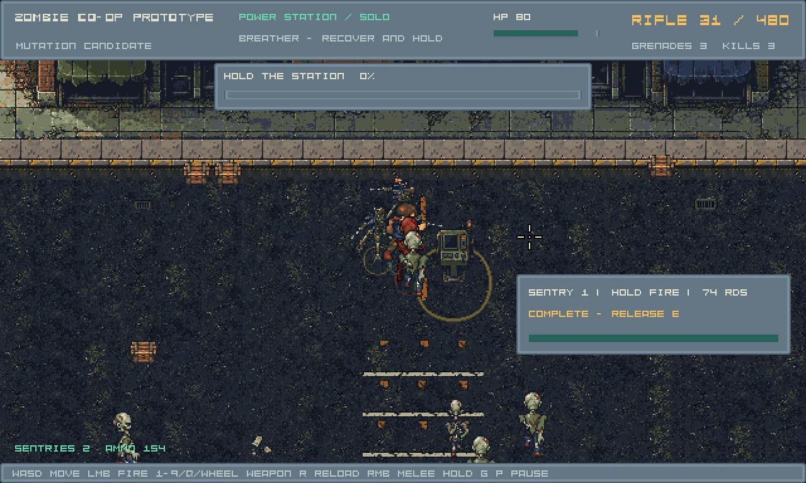
5_battle_final.png | tick 1201 | HoldFire, Auto | ammo 74, 80 | progress 0/0
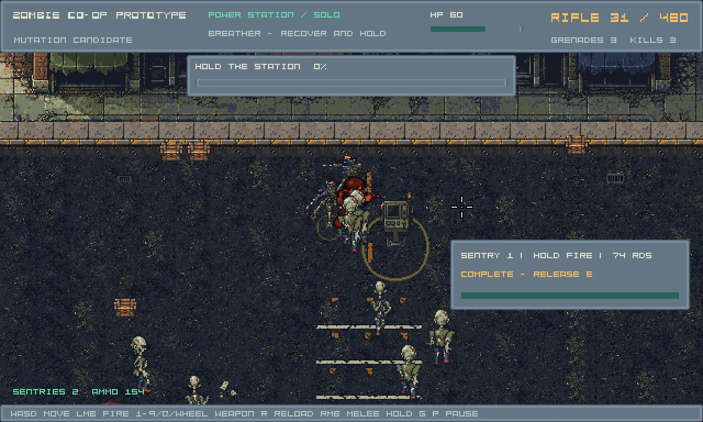
Technical/source closure and limitations: receipt and project checks. Launch: candidate/play.cmd.